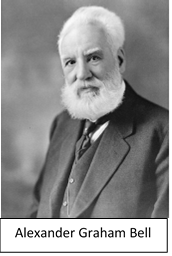

La téléphonie analogique est une technologie de communication qui utilise des signaux électriques analogiques pour transmettre la voix d'une personne à une autre. Cette technologie était très utilisée au 20ème siècle et était le principal moyen de communication pour les particuliers et les entreprises.
Pour utiliser la téléphonie analogique, il faut une ligne téléphonique qui transmet les signaux électriques qui représentent la voix humaine. Quand une personne parle dans un téléphone, le microphone du téléphone convertit les ondes sonores en signaux électriques analogiques. Ces signaux traversent les fils de cuivre de la ligne téléphonique jusqu'à la centrale téléphonique locale, où ils sont envoyés à la ligne de destination. Lorsque les signaux atteignent le téléphone de destination, ils sont convertis en ondes sonores par le haut-parleur du téléphone, permettant ainsi à l'utilisateur de recevoir le message.
|  |
Évolution de la téléphonie : En 1854, l’inventeur français Charles Bourseul fut le premier à imaginer un système de transmission électrique de la parole. En 1877, l’américain Alexander Graham Bell construisit le premier téléphone capable de transmettre la voix humaine, tout en respectant sa qualité et son timbre.
|
Le principe de la téléphonie analogique repose sur la conversion de la voix humaine en signaux électriques analogiques, qui sont ensuite transmis par des lignes téléphoniques jusqu'à leur destination où ils sont convertis en ondes sonores.
Plus précisément, lorsqu'un utilisateur parle dans un téléphone analogique, le microphone convertit les ondes sonores en signaux électriques analogiques. Ces signaux sont ensuite transmis à travers les fils de cuivre de la ligne téléphonique jusqu'à la centrale téléphonique locale, où ils sont acheminés vers la ligne de destination. Une fois que les signaux atteignent le téléphone de destination, ils sont convertis en ondes sonores par le haut-parleur du téléphone, permettant ainsi à l'utilisateur de recevoir le message.
Le principe de la téléphonie analogique est relativement simple, mais il repose sur une infrastructure complexe de lignes téléphoniques et de centrales téléphoniques qui permettent la transmission des signaux à travers de longues distances. La qualité de la transmission des signaux peut varier en fonction de la qualité des lignes téléphoniques et des équipements de transmission utilisés, ce qui peut affecter la qualité de la voix et la fiabilité de la communication.
Le principe de la téléphonie analogique repose sur l'utilisation d'un signal électrique continu pour représenter une variation continue de la pression acoustique (c'est-à-dire la voix).
Lorsqu'un utilisateur parle dans un téléphone, le microphone convertit les ondes sonores en une variation continue de la pression acoustique, qui est ensuite convertie en un signal électrique analogique à travers un circuit appelé préamplificateur. Le signal analogique est ensuite amplifié pour compenser la perte de puissance lors de la transmission à travers les lignes téléphoniques et pour s'assurer qu'il est suffisamment fort pour être entendu à l'autre bout.
Le signal analogique est alors modulé en fréquence pour être transmis à travers la ligne téléphonique. Le signal modulé est transmis à la centrale téléphonique locale, où il est démodulé et traité pour être acheminé vers la destination appropriée.
Un poste téléphonique simple est composé de plusieurs organes constitutifs, chacun remplissant une fonction spécifique dans le système de téléphonie. Voici les principaux organes constitutifs d'un poste téléphonique simple :
• Le combiné et son cordon : c'est la partie que l'utilisateur prend en main pour parler et écouter. Le combiné est composé d'un microphone pour capturer la voix de l'utilisateur et d'un haut-parleur pour diffuser la voix de l'interlocuteur.
• Le boîtier : c'est la structure qui contient tous les organes du poste téléphonique. Il peut être en plastique ou en métal.
• Le câble : c'est le fil qui relie le poste téléphonique à la prise téléphonique murale ou à la centrale téléphonique.
• Le circuit électronique : c'est le cerveau du poste téléphonique, il permet de transmettre les signaux électriques de la voix et du cadran à travers le câble jusqu'à la centrale téléphonique. Le circuit électronique est composé d'une carte mère, de composants électroniques tels que des transistors, des condensateurs, des diodes et des résistances, ainsi que d'un circuit de traitement du signal pour améliorer la qualité des communications.
• La sonnerie : c'est le dispositif qui produit un signal sonore pour alerter l'utilisateur qu'un appel entrant est en cours. Elle est généralement située à l'intérieur du boîtier du téléphone et est composée d'un électro-aimant, d'un marteau et d'une cloche ou d'un buzzer.
Dans les téléphones plus modernes, certains de ces composants peuvent être intégrés, et il peut y avoir des fonctionnalités supplémentaires telles que des boutons programmables pour composer des numéros fréquemment appelés ou pour accéder à des fonctions spéciales telles que la mise en attente d'un appel.
Le Réseau Téléphonique Commuté (RTC) est un réseau de télécommunications historique basé sur la technologie de la commutation de circuits. Il est utilisé pour acheminer les appels téléphoniques analogiques depuis un poste téléphonique jusqu'au destinataire de l'appel. Le RTC est composé de nombreux commutateurs, qui sont des équipements spécialisés permettant de connecter les appels téléphoniques en acheminant les signaux électriques analogiques via des lignes de cuivre.
Les commutateurs sont des équipements de réseau qui permettent de connecter les appels téléphoniques en acheminant les signaux électriques analogiques via des lignes de cuivre. Les commutateurs sont installés dans les centres de commutation, qui sont les points de connexion entre les différentes parties du RTC. Les centres de commutation sont reliés entre eux pour permettre l'acheminement des appels téléphoniques à travers le réseau.
Les commutateurs sont capables de gérer plusieurs appels simultanément, en utilisant des circuits de commutation pour connecter les appels entrants et sortants. Les circuits de commutation sont des circuits électroniques qui permettent de créer un chemin de communication entre deux postes téléphoniques. Ils sont capables de connecter des milliers de lignes téléphoniques différentes, permettant ainsi à un grand nombre d'utilisateurs de communiquer en même temps.
Les commutateurs peuvent également offrir des fonctionnalités supplémentaires, telles que la messagerie vocale, la mise en attente des appels, la redirection des appels, la conférence téléphonique, etc. Les centres de commutation peuvent également être équipés de logiciels de surveillance et de contrôle pour aider les opérateurs à gérer les appels et à résoudre les problèmes éventuels.
Avec l'évolution des technologies de communication, le RTC est progressivement remplacé par des réseaux basés sur la Voix sur IP (VoIP), qui transmettent les signaux de voix en utilisant des protocoles de communication numériques.
Voici un schéma simplifié du principe de fonctionnement du Réseau Téléphonique Commuté (RTC) :
Dans ce schéma, deux utilisateurs (A et B) sont connectés au RTC à travers des postes téléphoniques. Lorsqu'un utilisateur A souhaite appeler un utilisateur B, il compose le numéro de téléphone de B sur son poste. Le signal électrique analogique de la voix de l'utilisateur A est alors transmis de son poste téléphonique vers le central téléphonique A.
Le central téléphonique A est équipé d'un commutateur qui analyse le numéro de téléphone composé par l'utilisateur A et le compare avec les données de son annuaire téléphonique local. Le commutateur identifie alors le central téléphonique B associé au numéro de téléphone de B et établit une connexion entre les deux centraux téléphoniques en utilisant un circuit de commutation.
Le signal électrique analogique de la voix de l'utilisateur A est alors transmis du central téléphonique A au central téléphonique B via le circuit de commutation. Le central téléphonique B reçoit le signal et le transmet à l'utilisateur B via son poste téléphonique. Les utilisateurs A et B peuvent alors converser en temps réel jusqu'à ce que l'un d'entre eux raccroche.
Ce processus de connexion et de transmission des signaux électriques analogiques est répété pour chaque appel téléphonique émis à travers le RTC.
La boucle locale est une partie importante du réseau téléphonique commuté (RTC). Elle fait référence à la partie du réseau qui relie le poste téléphonique de l'abonné au central téléphonique local.
La boucle locale est généralement constituée de câbles de cuivre, qui transmettent les signaux électriques analogiques de la voix entre les abonnés et le central téléphonique. La boucle locale peut être considérée comme une structure arborescente, dans laquelle le central téléphonique représente le nœud racine de l'arbre, et les postes téléphoniques des abonnés représentent les nœuds terminaux.
Les nœuds intermédiaires de l'arbre représentent les points de raccordement des câbles de cuivre, appelés généralement boîtes de répartition, qui permettent de connecter plusieurs abonnés à une même ligne.
L'architecture arborescente de la boucle locale permet une distribution efficace des appels téléphoniques en acheminant les signaux électriques analogiques vers le central téléphonique. Les commutateurs dans les centres de commutation sont alors utilisés pour connecter les appels téléphoniques entre différents abonnés.
Cependant, la structure arborescente de la boucle locale peut présenter des limitations en termes de distance de transmission et de qualité du signal, notamment dans les zones rurales ou peu densément peuplées. Cela peut entraîner des problèmes de qualité sonore, de bruits et d'interférences sur les lignes téléphoniques.
La partie "Branchement" d'un réseau téléphonique fait référence à la connexion physique des câbles de la boucle locale à la prise téléphonique du poste de l'abonné. Cette partie est généralement assurée par le fournisseur de services de téléphonie, qui envoie un technicien pour réaliser l'installation.
Le branchement consiste à connecter les fils de la boucle locale qui arrivent chez l'abonné à une prise murale spéciale, appelée prise téléphonique. La prise téléphonique est conçue pour recevoir une fiche de connecteur standard, qui est utilisée pour brancher le poste téléphonique de l'abonné à la ligne téléphonique.
Le branchement est une étape importante dans l'installation d'un réseau téléphonique, car il doit être effectué correctement pour assurer une connexion fiable entre le poste téléphonique de l'abonné et le réseau téléphonique. Des erreurs de branchement peuvent entraîner des problèmes de qualité sonore, de bruits et d'interférences.
Dans l'infrastructure de téléphonie, la partie "Distribution" concerne la connexion des abonnés aux points de raccordement, tandis que la partie "Transport" fait le lien entre ces points de raccordement et les équipements centraux.
La partie "Distribution" englobe la section du réseau responsable de la connexion des abonnés aux points de raccordement locaux, souvent situés près des domiciles ou des entreprises. Des câbles de moyenne capacité, traditionnellement en cuivre dans les réseaux RTC, sont utilisés pour relier ces points de raccordement aux abonnés. Les lignes individuelles de chaque client sont connectées à ces points de raccordement.
La partie "Transport", quant à elle, prend le relais en connectant chaque sous-répartiteur au répartiteur central via des câbles de forte capacité. Ces câbles acheminent le trafic sur des distances plus importantes, pouvant aller jusqu'à plusieurs kilomètres. Le répartiteur central est le point de convergence des lignes de tous les abonnés dans une zone donnée. Il utilise des "jarretières" pour distribuer ces lignes vers les équipements d'usager du central téléphonique. Ces jarretières servent à établir la correspondance entre une ligne et un équipement téléphonique.
L'ensemble du réseau fonctionne en tandem : la partie "Distribution" connecte les abonnés à des points de raccordement locaux, tandis que la partie "Transport" assure la liaison entre ces points de raccordement et le cœur du réseau téléphonique, où les appels sont acheminés et gérés. Les Centre à Autonomie d'Acheminement (CAA) sont souvent utilisés pour centraliser les lignes de la zone desservie par un répartiteur, permettant ainsi de mettre les clients en relation.
La communication entre le téléphone et le central dans le cadre de la téléphonie analogique se fait par l'intermédiaire de signaux électriques.
La norme TBR21 (janvier 1998) définit les caractéristiques électriques de ces signaux, qui sont émis par le combiné téléphonique ou tout autre équipement branché sur la prise téléphonique.
La norme TBR21 spécifie notamment les niveaux de tension et de courant qui doivent être utilisés pour transmettre les signaux de voix et de données entre le téléphone et le central téléphonique.
Elle établit également des limites de tolérance pour les niveaux de bruit et de distorsion qui peuvent être présents sur la ligne téléphonique.
Lorsqu'un utilisateur décroche le combiné téléphonique, un signal électrique est envoyé au central téléphonique pour indiquer que l'utilisateur souhaite passer un appel. Le central téléphonique envoie alors un signal d'appel au combiné téléphonique pour indiquer que la ligne est en cours d'appel.
Lorsque l'appel est établi, les signaux de voix et de données sont transmis entre le téléphone et le central téléphonique en utilisant des variations de tension et de courant sur la ligne téléphonique.
En résumé, la norme TBR21 définit les caractéristiques électriques des signaux qui sont utilisés pour la communication entre le téléphone et le central téléphonique dans le cadre de la téléphonie analogique.
Sur notre site actuellement nous avons encore du cable 4 paires gris PTT SYT1 et cables MNC8, MNC88 catégorie 4 à 6E.
| Cat 4 | Catégorie 4 est un type de câblage testé à 20 MHz. Ce standard fut principalement utilisé pour les réseaux Token Ring à 16 Mbit/s ou les réseaux 10BASE-T7. Il fut rapidement remplacé par les catégories 5 et 5e. Dans la norme ANSI/TIA/EIA-568B (2011), seule la catégorie 3 est décrite. |
| Cat 5 | Catégorie 5 (ou Cat 5) sert de moyen de liaison pour la transmission de données à des débits allant de 10 à 100 Mbit/s (Fast Ethernet) et 1 000 Mbit/s pour sa variante Cat 5e (Gigabit Ethernet). Il est largement employé dans le câblage de réseaux informatiques utilisant à la fois une topologie en étoile et la technologie Ethernet. |
| Cat 5E | La catégorie 5e résiste à une gamme de fréquences allant jusqu'à 100 MHz et est conçue pour des vitesses de transmission d'au plus 1 gigaoctet par seconde (Gigabit Ethernet). |
| Cat 6 | La catégorie 6 résiste à une gamme de fréquences allant jusqu'à 250 MHz et est conçue pour des vitesses de transmission jusqu'à 1 gigaoctet par seconde (Gigabit Ethernet). Le câble Cat 6 est standardisé pour le Gigabit Ethernet et est rétrocompatible avec le Cat 5E, tout en possédant des spécifications plus strictes en termes de diaphonie. |
| Cat 6A | Un câble de transmission de données de haute performance conçu pour des vitesses de transmission jusqu'à 10 Go par seconde. Ces câbles permettent l'utilisation de protocoles supportés par la classe EA pour la mise en œuvre de la norme Ethernet 10G Base-T. Les câbles Cat 6A résistent à une gamme de fréquences allant jusqu'à 500 MHz et sont compatibles avec les normes PoE et PoE+. |
| Cat 7 | Les câbles réseau de catégorie 7 (CAT 7) sont conçus pour fournir une connectivité haut débit, offrant des débits de données allant jusqu'à 10 Gbit/s. Leur performance est due à un double blindage qui réduit les interférences électromagnétiques et radiofréquences. Ils conviennent aux environnements exigeants, tels que les réseaux domestiques, les entreprises et les centres de données, mais peuvent être plus coûteux que les câbles de catégories inférieures. La rétrocompatibilité avec d'autres catégories de câbles les rend polyvalents pour une variété d'applications. |
| Cat 8 | Les câbles de catégorie 8 (CAT 8) sont conçus pour offrir des performances de pointe dans le domaine des réseaux Ethernet. Ils prennent en charge des débits de données exceptionnellement élevés, atteignant jusqu'à 25 ou 40 Gbit/s, tout en étant équipés d'un double blindage pour réduire au minimum les interférences électromagnétiques. Les câbles CAT 8 sont adaptés aux environnements exigeants, tels que les centres de données et les réseaux d'entreprise, et ils sont rétrocompatibles avec les équipements de catégories antérieures, bien que pour une performance optimale, il est recommandé d'utiliser des équipements compatibles CAT 8. |
Les câbles CAT 4, CAT 6, CAT 6A, CAT 7 et CAT 8 sont des types de câbles Ethernet utilisés pour la transmission de données à haute vitesse sur des réseaux informatiques. La principale différence entre ces câbles est leur capacité de transmission de données. Les câbles CAT 4 sont capables de transférer des données à des vitesses allant jusqu'à 16 Mbps, tandis que les câbles CAT 6 peuvent atteindre des vitesses allant jusqu'à 10 Gbps. Les câbles CAT 6A peuvent quant à eux atteindre des vitesses allant jusqu'à 10 Gbps sur des distances plus longues que les câbles CAT 6.
Les câbles CAT 7 et CAT 8, les plus récents de cette série, sont conçus pour des performances encore plus élevées. Les câbles CAT 7 peuvent atteindre des vitesses de transmission de données allant jusqu'à 10 Gbps sur des distances plus courtes que les câbles CAT 6A. En revanche, les câbles CAT 8 sont capables de supporter des vitesses allant jusqu'à 25 ou 40 Gbps, en fonction de la norme CAT 8.1 ou CAT 8.2, sur des distances plus courtes que les câbles CAT 7.
Les câbles CAT 6 et CAT 6A sont considérés comme les câbles les plus couramment utilisés pour les réseaux Ethernet filaires modernes. Ils sont souvent utilisés dans les environnements professionnels tels que les bureaux, les centres de données et les salles de serveurs. Les câbles CAT 4 sont moins courants aujourd'hui, car ils ne sont plus en mesure de répondre aux exigences de vitesse de la plupart des applications informatiques modernes. Cependant, ils peuvent encore être utilisés dans certains systèmes de communication plus anciens.
En général, le choix du câble à utiliser dépendra des exigences de vitesse et de distance de votre réseau, ainsi que de la technologie de vos équipements réseau. Il est important de s'assurer que le câble choisi est compatible avec les appareils connectés et les protocoles de communication utilisés.
| Usage courant | ISO 11801 | Blindage du câble | Blindage de paire |
| UTP | U/UTP | aucun | aucun |
| STP | S/UTP | tresse | aucun |
| FTP, STP | F/UTP | feuillard | aucun |
| SFTP, S-FTP, STP | SF/UTP | tresse, feuillard | aucun |
| STP | U/FTP | aucun | feuillard |
| SSTP, SFTP, STP | S/FTP | tresse | feuillard |
| FFTP, STP | FFTP, STP | feuillard | feuillard |
| SSTP, SFTP, STP | SF/FTP | tresse, feuillard | feuillard |
| • U (« unshielded ») : non blindé • S (« braided shielding ») : blindage par tresse • F (« foil shielding ») : blindage par feuillard |
|||

Un module contient huit paires

-------- Après les généralitées.---------
Les conséquences de la fin du RTC (Réseau Téléphonique Commuté) pour les entreprises utilisant des systèmes de téléphonie traditionnels basés sur le RTC. Le RTC est un réseau de téléphonie analogique qui a été largement utilisé depuis les années 1900 pour fournir des services de téléphonie dans le monde entier. Cependant, en raison de l'obsolescence de la technologie, les fournisseurs de services de télécommunications ont décidé de mettre fin au RTC et de le remplacer par des technologies plus modernes telles que la voix sur IP (VoIP).
Les entreprises qui utilisent encore des systèmes de téléphonie traditionnels basés sur le RTC devront migrer vers des solutions de téléphonie VoIP avant la fin du RTC, qui est prévue pour 2023 en France. Les entreprises qui ne migreront pas vers des solutions VoIP pourraient rencontrer des problèmes tels que l'indisponibilité des services de téléphonie ou la perte de numéros de télé.
La migration vers la VoIP peut offrir des avantages tels que la réduction des coûts et une meilleure flexibilité en matière de gestion des appels. Cependant, il est important que les entreprises choisissent un fournisseur de services de VoIP de confiance pour s'assurer que leurs communications sont sécurisées et fiables.
En résumé, l'article explique que la fin du RTC aura un impact sur les entreprises utilisant des systèmes de téléphonie traditionnels et les encourage à migrer vers des solutions de VoIP pour éviter les interruptions de service et profiter des avantages offerts par cette technologie.
Source :
http://sen.arbezcarme.free.fr/_techno/2.5-TR-Reseau-telephonique-analogique-et-RNIS/rtc.pdf
https://www.ubefone.com/entreprise-mobile/la-fin-du-rtc-quest-ce-que-cela-signifie-pour-votre-entreprise/